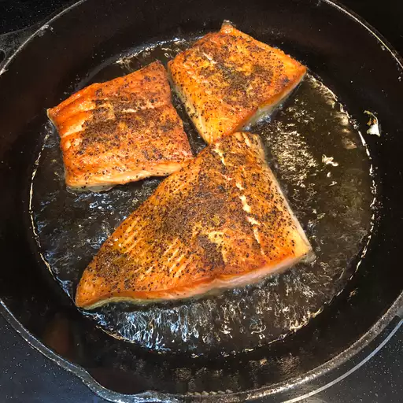

Salmon

This particual salmon is my favorite recipe to make because not only is it healthy but it also packs a punch for the right indiviaul.
This salmon is to die for and a bang for a buck for a date night or even a calm chill day at home.
Hope you like and please review for future Recipes.
Ingredients
- Salmon
- Butter
- Paprika
- Lemon
- Salt
- Pepper
- Onion Powder
- Garlic
Steps
- Heat up skillet to medium
- Season your Salmon as you would like.
- Place Salmon on pan
- 2-3 mins for medium well, 5mins on both sides for well done.
- Place and plate and squeeze lemon onto salmon.
- Serve with any side of choice prefarably rice